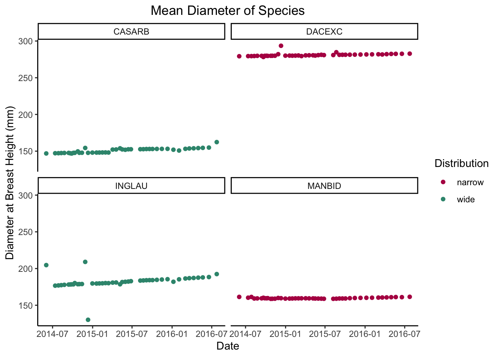
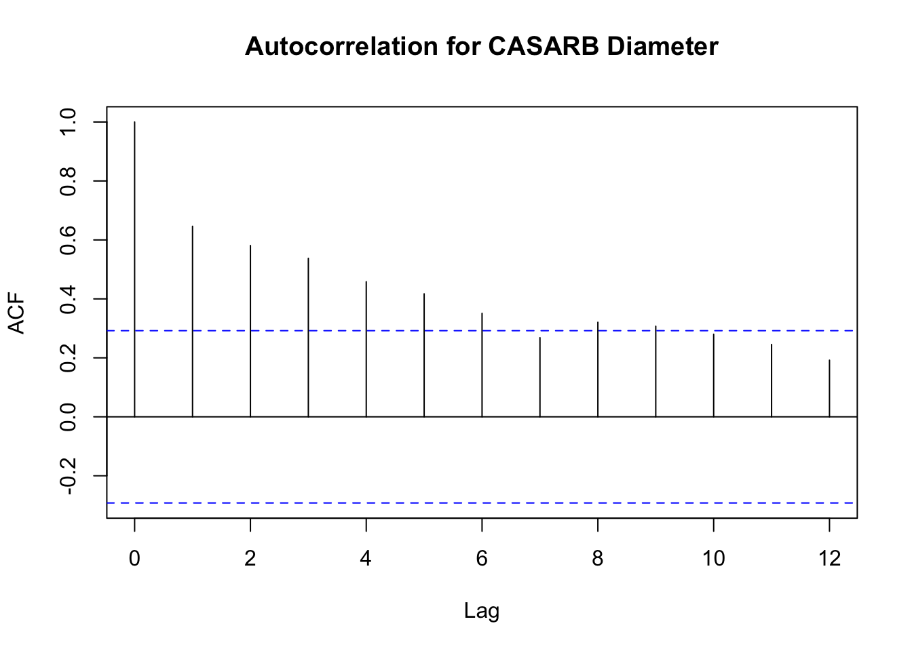

Climate change, in conjunction with other environmental stressors, continue to threaten forests around the world. Mass tree deaths, fires, and deforestation can create a negative feedback loop, turning these well-recognized carbon sinks into a source. Forests are also recognized for their role in preventing erosion, filtering air pollution, and providing habitat and recreation for people and wildlife alike.
Droughts have been proven to adversely affect forest health. Minimal and inconsistent water supply affects phenology and increases the chance of insect outbreaks or wildfires1. While the severity of these threats is not novel to me, I recognized that most of my knowledge on the topic at hand was based on studies conducted in temperate forests. I was curious to learn more about how forests impacted tropical species, which I presume would be far less adapted to severe weather fluctuations.
Goal
Conduct various linear regressions to mathematically summarize tropical forest growth under drought conditions, and examine if tree species belonging to families with widespread distributions exhibit lower drought vulnerability.
Distribution data from Global Biodiversity Information Facility (GBIF)
Since species distributions for tree species in this study are not readily available, I will be comparing species from lineages with wide versus narrow distributions.
Data
About the Data
Data on tree diameter changes were available through the DataONE interface. This dataset includes measures of tree diameter at breast height (dbh) for several tropical tree species in the Luquillo National Research Forest in Puerto Rico. I chose this data since the Luquillo Forest is part of the Long-Term Ecological Research Network, and meteorological data in this area was well recorded. Additionally, these diameter measurements were taken during a notable drought, lasting from 2013-2016.
To avoid model overfitting, I only wanted to include climate variables that both represent drought conditions and have a potentially larger impact on tree growth. I used mean average temperature and total rainfall to relate tree growth and drought. I also decided to include photosynthetic photon flux density (ppfd), since it directly relates to plants. PPFD is a measure of the number of photons between the 400 and 700nm wavelengths that are hitting surfaces per unit time. These wavelengths are optimal for plant molecules to absorb2.
Tree Species
To improve predictive capabilities, I selected the four most sampled species that fell within one of two categories for familial distribution. Species and family information was pulled from the metadata, but I will summarize it here:
Abbreviation
Species
Family
Family Distribution
DACEXC
Dacryodes excelsa
Burseraceae
narrow
MANBID
Manilkara bidentata
Sapotaceae
narrow
CASARB
Casearia arborea
Salicaceae
wide
INGLAU
Inga laurina
Fabaceae
wide
Data Cleaning
Although data collection for tree diameters began in 2011, measurements were not consistently taken until June 2014. In order to create time series models without significant data gaps, I restricted the data from June 2014 to July 2016, when diameter data was collected monthly.
Climate data that was collected daily had far more missing values than data collected hourly, so I used hourly climate data to calculate daily and monthly averages.
View Code
## ======== Convert Hourly Data to Lower Res =====# convert hourly climate to daily averagesdaily_conditions <- hourly_conditions %>%group_by(date =date(datetime)) %>%summarise(tot_rain_mm =sum(rain_mm, na.rm =TRUE),avg_temp_c =mean(temp_c, na.rm =TRUE),avg_ppfd_mmol_m2 =mean(ppfd_mmol_m2_hour, na.rm =TRUE)) %>%mutate(year_mo =yearmonth(date))# create monthly conditionsmonthly_conditions <- hourly_conditions %>%group_by(year_mo) %>%summarise(tot_rain_mm =sum(rain_mm, na.rm =TRUE),avg_temp_c =mean(temp_c, na.rm =TRUE),avg_ppfd_mmol_m2 =mean(ppfd_mmol_m2_hour, na.rm =TRUE))# replace zeros w/NA, no data collected October 2014monthly_conditions['tot_rain_mm'][monthly_conditions['tot_rain_mm'] ==0] <-NA# replace NAs with the mean of previous and next monthmonthly_conditions$tot_rain_mm <-na.approx(monthly_conditions$tot_rain_mm)# remove raw data variablesrm(clim_1999_2014, clim_2015_2023, dbh_raw, hourly_conditions)
View Code
# create fully joined dfclim_dbh_full <-left_join(dbh, daily_conditions, by =c('date','year_mo'))
Exploration - Climate Trends
The following plots show time series decomposition from June 2014 to July 2016 for average monthly temperature and total monthly rainfall. Although the seasonality component contributes more to the overall shape of the line, the decomposed trends still demonstrate signs of drought (increasing temperature and decreasing rainfall).
Diameter trends for all species selected appear linear, so testing linear regression fit is within reason.
View Code
ggplot(data = dbh, aes(x=date, y= mean_daily_dbh, col = distribution)) +geom_point() +scale_color_manual(values =c('#B40052', '#37947D'))+labs(x ="Date",y ="Diameter at Breast Height (mm)",title ="Mean Diameter of Species") +guides(color =guide_legend(title ="Distribution")) +theme_classic() +theme(plot.title =element_text(hjust =0.5)) +facet_wrap(~species)

Analysis - Static Time Series
Simple linear regression
A simple linear regression time series looking at tree diameter (y) over time (x) for four species. This can be written out mathematically as:\[ \hat{y} = \beta_0 + \beta_1 x_1 \]
Where \(\beta_1\) is the average change in dbh given a one unit change in time (\(x_1\)), and \(\beta_0\) is the estimated diameter when time (\(x_1\)) is zero.
View Code
# create subsets for each individual speciesdacexc <- clim_dbh_full %>%filter(species =='DACEXC') %>%as_tsibble(index = date)manbid <- clim_dbh_full %>%filter(species =='MANBID') %>%as_tsibble(index = date)inglau <- clim_dbh_full %>%filter(species =='INGLAU') %>%as_tsibble(index = date)casarb <- clim_dbh_full %>%filter(species =='CASARB') %>%as_tsibble(index = date)# run linear regressionsdacexc_model <-lm(mean_daily_dbh ~ date, data = dacexc)manbid_model <-lm(mean_daily_dbh ~ date, data = manbid)inglau_model <-lm(mean_daily_dbh ~ date, data = inglau)casarb_model <-lm(mean_daily_dbh ~ date, data = casarb)# view results (wide distribution)tab_model(inglau_model, casarb_model,title ='Wide Distribution',dv.labels =c('I. laurina', 'C. arborea'),digits =4)
This regression compares diameter over time, adding all climate variables as predictors to see if the models predictive capability improves. This can be written out mathematically as:\[ \hat{y} = \beta_0 + \beta_1 x_1 + \beta_2 x_2 + \beta_3 x_3 + \beta_4 x_4\]
Where \(x_2\) through \(x_4\) are the added climate variables.
View Code
# run models w/climate variablesdacexc_model2 <-lm(mean_daily_dbh ~ date + tot_rain_mm + avg_temp_c + avg_ppfd_mmol_m2, data = dacexc)manbid_model2 <-lm(mean_daily_dbh ~ date + tot_rain_mm + avg_temp_c + avg_ppfd_mmol_m2, data = manbid)inglau_model2 <-lm(mean_daily_dbh ~ date + tot_rain_mm + avg_temp_c + avg_ppfd_mmol_m2, data = inglau)casarb_model2 <-lm(mean_daily_dbh ~ date + tot_rain_mm + avg_temp_c + avg_ppfd_mmol_m2, data = casarb)# view results (wide distribution)tab_model(inglau_model2, casarb_model2,title ='Wide Distribution',dv.labels =c('I. laurina', 'C. arborea'),digits =4)
Climate impacts on tree growth are likely not immediate, in order to produce a more accurate model it would be best to add a lag to tree growth. Ideally, this regression would test if current diameter at breast height is dependent on past diameter and past climate variables.
View Code
# conduct dynamic regression for a single speciesdacexc_model3 <-dynlm(mean_daily_dbh ~ tot_rain_mm +lag(tot_rain_mm, 1) + avg_temp_c +lag(avg_temp_c, 1) + avg_ppfd_mmol_m2 +lag(avg_ppfd_mmol_m2, 1), data = dacexc)manbid_model3 <-dynlm(mean_daily_dbh ~lag(tot_rain_mm, 1) +lag(avg_temp_c, 1) +lag(avg_ppfd_mmol_m2, 1), data = manbid)inglau_model3 <-dynlm(mean_daily_dbh ~lag(tot_rain_mm, 1) +lag(avg_temp_c, 1) +lag(avg_ppfd_mmol_m2, 1), data = inglau)casarb_model3 <-dynlm(mean_daily_dbh ~lag(tot_rain_mm, 1) +lag(avg_temp_c, 1) +lag(avg_ppfd_mmol_m2, 1), data = casarb)
I did not run these models, as I realized they were producing very high adjusted r-squared values, between 0.96-1. Oftentimes inflated adjusted r-sqaured values are caused by autocorrelation, which violates one of the assumptions that must be met to run a dynamic linear model. The autocorrelation between previous and current diameter breast height was very high, and can be seen by creating an ACF plot:
View Code
acf(casarb$mean_daily_dbh, lag.max =12, na.action = na.pass, main ='Autocorrelation for CASARB Diameter')

Results
After running several regressions, I found that increasing complexity rarely improved the model. In fact, the simple static time series for C. arborea (CASARB) was one of the most accurate, with a model that explained 70% of variation in diameter growth (y). CASARB has the largest increase in mean diameter height between the first and last measurement, and I believe this is what produced such a well-fitting model. Given more time, I predict that time alone would be a much better indicator of diameter growth than what is demonstrated here. All species except M. bidentata (MANBID) experienced decreases in adjusted r-squared values when climate variables were added. This suggests climate variables were likely excessive and caused overfitting, but the one exception is interesting. By adding climate variables, the new MANBID model explained 30% of variation in diameter, as opposed to 12% in the initial model. While this percentage is still rather low, it suggests potential discrepancies between which tree species are more rapidly impacted by climate.
Limitations
Given more time, I would have analyzed the change in diameter at breast height between measurements instead of dbh itself. This could potentially reduce autocorrelation, so a dynamic time series could be run instead. Alternatively, an auto regressive moving average (or ARIMA) model would allow me to compare these changes regardless of the high autocorrelation. As mentioned, I suspect that data collected over a longer period of time would demonstrate a stronger linear relationship between tree diameter and time. To expand this analysis, growth rates during periods of drought could be compared to rates during favorable climate conditions.
Conclusion
Much more work needs to be done to properly assess the impact that climate change has on tropical rain forests, and how these impacts may different from temperature forests. Data on trees physiological responses can be much harder to collect, leaving gaps in historic records. Similarly, distribution data can be hard to difficult consolidate. Still, improvements in technology, climate science, and environmental empathy continue to lead us in the right direction.
Rabinowitz, Harold, and Suzanne Vogel, editors. “Chapter 11 - Style and Usage in Earth Science and Environmental Science.” The Manual of Scientific Style, Academic Press, 2009, pp. 427–68. ScienceDirect, https://doi.org/10.1016/B978-012373980-3.50015-0.↩︎
Citation
BibTeX citation:
@online{barajas2023,
author = {Barajas, Briana},
title = {Drought {Tolerance} in {Tropical} {Tree} {Species}},
date = {2023-12-10},
url = {https://github.com/briana-barajas/luquillo-tree-growth},
langid = {en}
}